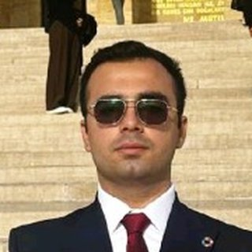

Emin Kalemİstanbul · Kahramanmaraş
I build Kengeş, a statistics engine for researchers. I study Business and Computer Programming at Medipol, write sustainability reports at SURKAM, and serve as a Climate Envoy.
＋ Save contactCompute first, explain second.
Show the evidence.
Say what it can't do.
Keep the human in charge.
AI assists. Evidence decides.
01
Building
KengeşFounder & Developer · 2026–
Statistical analysis for researchers. Bring your data, approve the method, get results with the reasoning attached. Working MVP.
kenges.space ↗
KİLİMFounder · R&D
Early-stage energy harvesting research. Terminal İstanbul incubation.
02
Research
SURKAM · Medipol University2024–
Sustainability data and reporting. Co-author of the university's SDG 13 Climate Action and SDG 4 Quality Education reports.
03
Climate
Climate Envoy2025–
COP31 ParticipantAntalya · Nov 2026
Organising team, Medipol COP31 SimulationMay 2026
Former President, Sustainable Development Club2025–26
04
By the numbers
2,655automated tests keeping Kengeş honest
2programmes, studied at the same time
3hdaily commute across İstanbul
46plate code of home, Kahramanmaraş
0business cards printed (hence this page)
1conversation away from working together
05
Looking for
- Researchers to pilot Kengeş with real data
- Research and internship opportunities in AI and data science
- People building tools for science and climate